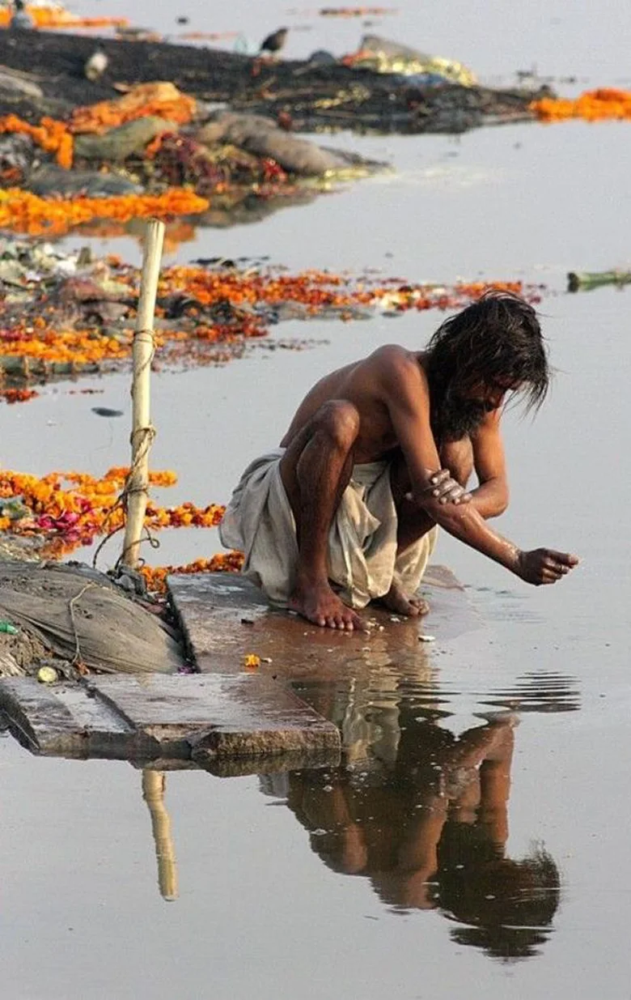
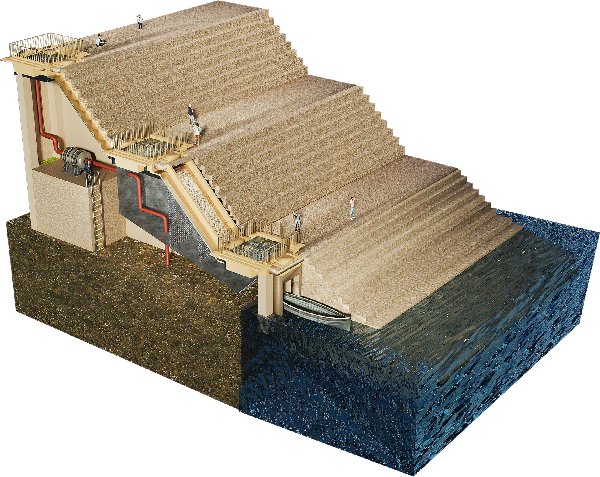
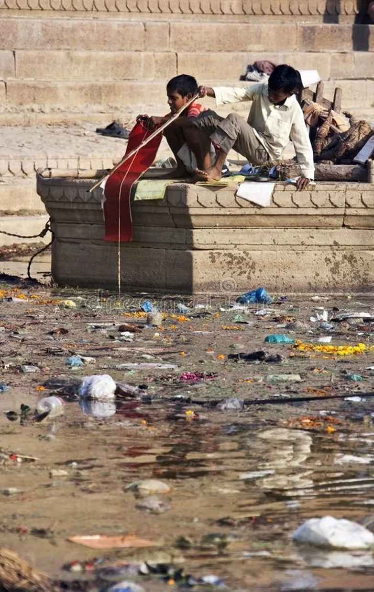
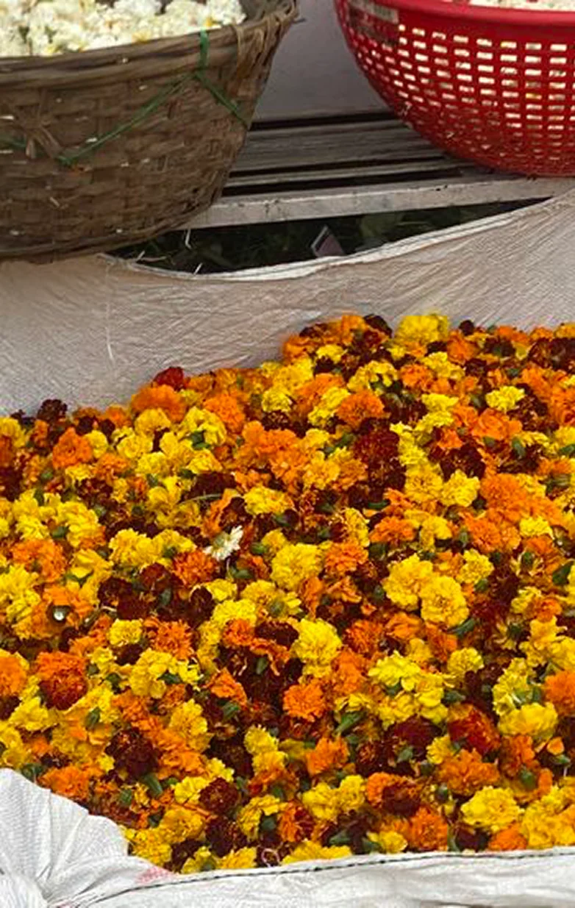
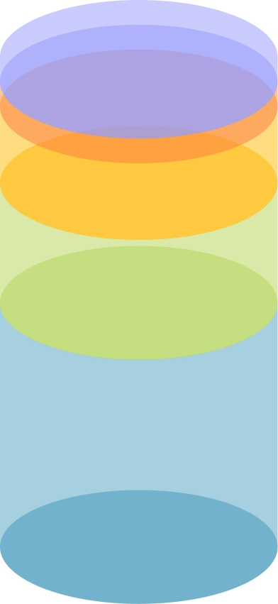
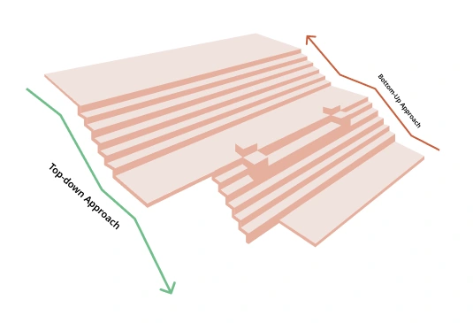
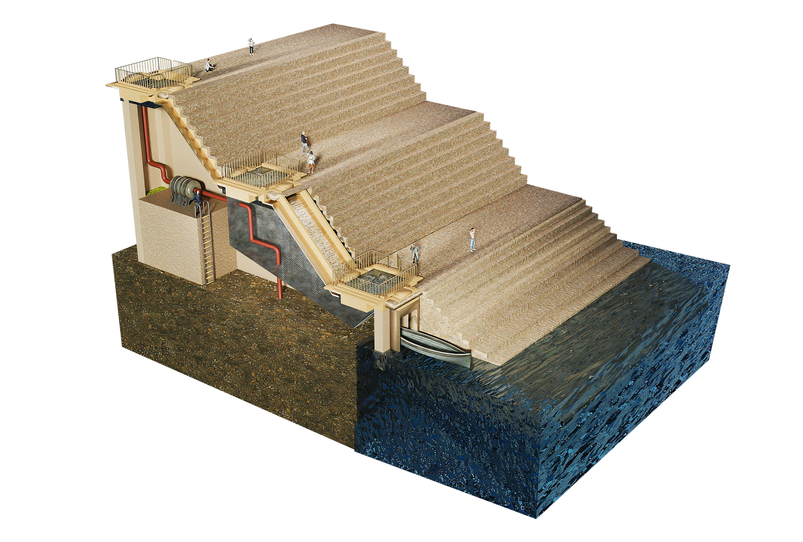
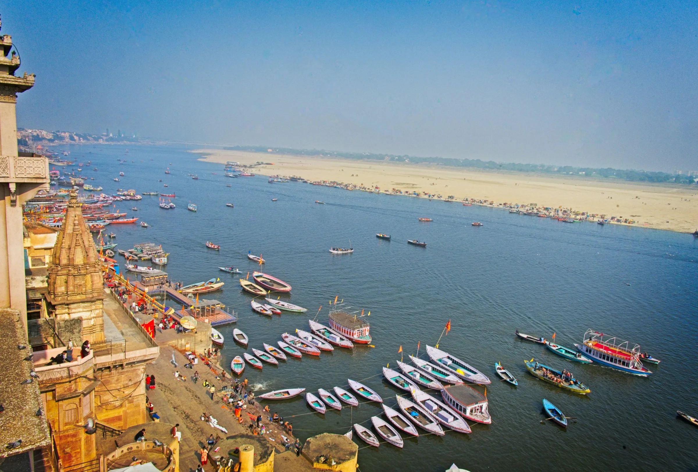

Culture
An offering can be simultaneously sacred to the person offering it and environmentally harmful in its material form.
A practical approach to managing holy waste on the Varanasi ghats

Varanasi is considered one of the most visited cities in the world. The riverfront hosts rituals that have endured for centuries. People purchase offerings, make a prayer, and return sacred material to the Ganga. But many contemporary offerings now contain plastics, nylon, foil, synthetic coatings and other materials that do not belong in the river.
It is easy to frame the visible outcome as a littering problem, but that overlooks the religious meaning of an offering and the difficult physical conditions under which waste must be collected.
70tonnes
of floral waste generated across Varanasi every week.
For a devotee, putting sacred material in a regular bin can feel like throwing devotion away. For the sanitation worker, collecting waste on steep steps means carrying heavy, wet loads uphill through spaces inaccessible to conventional carts.
To understand this problem, we decided to consider the old city of Varanasi. The old city consists of the major temples, old architecture and, most importantly, the ghats of the river Ganga.
We followed the offering beyond the moment it enters the river. An object bought from a vendor becomes part of a ritual; after the ritual, it becomes material handled by people and institutions with very different priorities.
While the city continued to grow and modernise, its religious traditions remained deeply rooted in everyday life. Today, ancient rituals coexist with dense urban development, mass pilgrimage and modern consumer materials.
Natural materials, clay, leaves and metal offerings
Mass-produced objects and synthetic packaging become more common
Mixed waste, difficult segregation and disposal challenges
Government bodies, manufacturers, policymakers and broader institutions shape the conditions in which the system operates.
Vendors, service providers and local management influence what enters the river and how waste is handled.
Devotees, sanitation workers, boatmen and river life directly interact with the river and its immediate environment.
Although devotees perform the rituals, vendors, sanitation workers and governing bodies influence what enters the river and what happens afterward. The responsibility for managing sacred waste is therefore distributed across multiple stakeholders.
Drag the cards around :D

An offering can be simultaneously sacred to the person offering it and environmentally harmful in its material form.

Ghats are stepped, making them a difficult location for workers to collect, segregate and dispose of waste.

The material passes between devotees, vendors, workers, municipal services and potential processors, meaning no single actor governs the entire journey.
The research combined a frequency-versus-impact classification of materials, stakeholder relationships, a 24-hour waste cycle, an annual festival cycle and a larger Giga Map.
Select any map to open it full screen. Scroll or pinch to zoom, drag to pan, ← → to move between maps.
Flowers dominate the visible organic stream, but roughly one in four listed components was synthetic. Nylon garland threads, wrappers, foil and plaster-of-Paris objects were among the components that made source separation difficult.

The composition of ritual offerings has become increasingly complex with the introduction of synthetic and modern materials. However, traditional practices and existing infrastructure have not evolved to accommodate these changes.
We tracked the timeframe which Varanasi goes through every year. Mapping out the high and low points gives us clarity on whether the system operates temporally or consistently.
The proposed collection system needs to handle occasional extreme demand and persistent everyday demand.
The first-mile transit relies entirely on slow, manual handcarts; heat-soaked flowers rot before they reach processing.
Ancient narrow alleys completely prevent access for standard municipal garbage trucks.
10–18 tonnes of perishable florals daily, plus hidden synthetic plastics, ash, and chemical dyes.
Ecological toxicity, economic vulnerability for vendors, and reputational damage for a sacred heritage city.
Each ghat serves a distinct purpose and attracts different patterns of activity. Our analysis suggested that waste accumulation is concentrated at specific ghats rather than evenly distributed, potentially affecting the river further downstream.
For instance, Manikarnika Ghat primarily serves as a cremation site, resulting in a distinct waste composition dominated by cremation-related residues such as ash, wood remnants, flowers and other ritual materials.
The research exposed a mismatch between how the system asks people to behave and what the environment allows them to do. We translated that mismatch into four design opportunities.
The first problem was not the absence of bins alone. It was the gap between the meaning of an offering and the meaning of discarding it. We needed a transition that could be perceived as the closing gesture of a ritual.
The existing first mile asks workers to move material against the terrain. The opportunity was to redirect collection downhill and connect it to river-accessible transport.
Many low-mass synthetic components complicate processing once they are mixed with wet organic material. Source-level separation could reduce that burden, although it would depend on appropriate use.
Offerings begin in local commerce and often end as unmanaged waste. Processing suitable organic material into useful goods could create a possible path back into the local economy.
Make the act of letting go feel ritual-compatible.
Reduce the physical burden of moving waste up the steps.

Workers simply push the sorted waste down the steps. The waste is loaded directly into shallow, floating river barges waiting right at the water's edge.
The river acts as an open, traffic-free highway. It gets the trash to processing centers much faster and drastically cuts down the need for brutal manual labor.
Keeps the narrow streets completely clear. The waste moves smoothly and quietly behind the scenes, allowing the devotee flow to remain completely uninterrupted.
Workers have to haul heavy, wet sludge up the steep stairs and then try to navigate handcarts out of the city through extremely narrow, crowded alleys to reach garbage trucks.
Constantly delayed by city traffic and bottlenecks in the alleys. It has a huge physical cost, leading to rapid worker burnout.
Garbage carts clash directly with the flow of foot traffic. Devotees have to constantly dodge leaking waste bins, which ruins the peaceful, sacred vibe.
The Kund, transfer system, barge operations, processing partners and local vendors depend on one another. If one handoff fails, the loop is interrupted. The intervention is therefore a proposal about relationships and operations as much as product form.
Conceptualised as a response to the shifting infrastructure of Varanasi, the Ganga Kund acts as a centralized point for pilgrims to dispose of holy offerings. The project explores the union of religious behavior and architectural design, specifically addressing how pilgrims distinguish between the sacred and the profane.
Organic offerings and dry synthetics are intended to be segregated at the deposit point, reducing the complexity of sorting mixed material later.

By aligning the physical structure with the spiritual expectations of the user, the design prevents accidents and misuse without disrupting the ritual flow.
A continuous flow of water extends from the river to the deposit point, creating a natural connection between the Ganga Kund and the Ganga.
An internal pump room draws river water to create a continuous, recirculating current.
Integrated into the vertical slots of the structure, these cartridges use activated charcoal and river gravel. These natural elements act as a "ritualistic bypass," filtering out fine particles without using harsh chemicals.
The Kund is designed to accommodate several events such as Deep Daan, small idol immersion, etc.
Taking into consideration our top-to-bottom method of waste collection and transport, the offerings become easy to collect via boats which can be accessed on the river.
To design for such a sensitive context, we studied how objects acquire sacred meaning. The Sacred and the Profane, Moral Disgust Theory and the Contagion Heuristic helped us understand religious perceptions and inform our intervention.
During aarti, festivals, and peak pilgrimage, cognitive load is at maximum. People are not thinking analytically. Any behavior that requires reading instructions, opening a lid, or making a choice will be unlikely.
Appropriate signage will be set up so that the sanctity of the Ganga Kund is maintained and that the flow of offerings isn't mixed with external materials.
A proposed ritual-integrated deposit station, supported by source separation, gravity-assisted transfer, floating barges and potential downstream processing.
This circular economy model intercepts traditional religious offerings at specialized Ganga Kunds, preventing direct river pollution. Collected by boat and transported upstream, the organic waste is separated and upcycled into valuable resources: flowers become incense and compost, coconuts yield activated carbon, and fabrics are transformed into biodegradable packaging.
The Kund, transfer system, barge operations, processing partners and local vendors depend on one another. If one handoff fails, the loop is interrupted. The intervention is therefore a proposal about relationships and operations as much as product form.

Our research was entirely desk-based, drawing on published studies, calculated values and assumption-based estimates. Without interviews, field surveys or direct measurements, our maps highlight potential relationships and risks rather than validated outcomes.
While existing Ganga trash skimmers, floral-waste upcycling initiatives and CPCB guidelines establish precedents, they do not validate our proposed intervention. The Ganga Kund's cultural acceptance, technical feasibility, financial viability and resilience to flooding remain areas for further testing.
Wicked problems don't take binary answers. Balancing an ancient city's physical limits against what people believe meant we couldn't force a logistics fix that ignored belief. The maps show where the system breaks. They can't tell us whether a devotee will use the vessel we drew; that question belongs to the ghats.
We believe that the graphic-led deposit station could adapt to other crowded pilgrimage sites, subject to local norms. Whether the loop closes at the cost and reliability it needs is a question this paper doesn't settle. What the map offers is an account of where the system breaks and which interventions are worth testing first, and a case that tradition and the river aren't opposed.